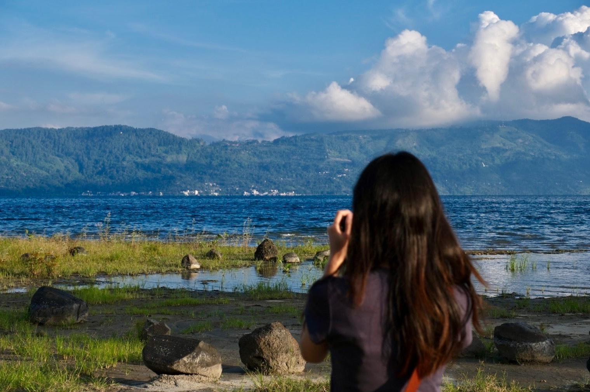
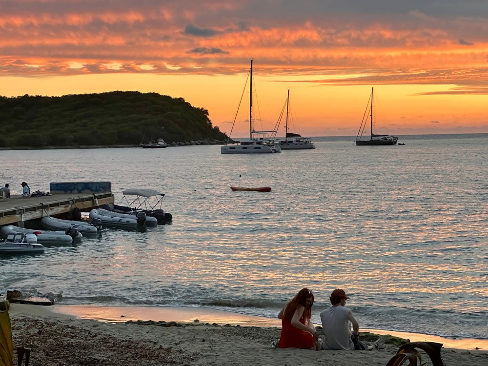

Where I’ve lived
Jakarta, where I was born and raised → Pasadena → Ithaca → New York → Singapore → back home to Jakarta.

Food scientistConsumer researcherDesigner
I’ve spent the last six years at the intersection of food and product experience: in a sensory lab at Cornell University, in a meal kit I co-founded in Jakarta, and in three and a half years of qualitative research for global food brands.
Across all of it, I keep returning to the same questions: what do people feel but struggle to say, and what gets lost when those feelings are turned into a chart for someone else to act on?
I start by listening closely, then make what I hear visible, whether that’s mapping how emotions shift bite by bite or teaching an AI interviewer to understand what someone really meant. I do my best work with open-minded, diverse teams, building off each other’s ideas and thinking carefully about how our work might ripple into someone else’s life.
I want everything I design to make a real difference in the lives it touches.

Where I’ve lived
Jakarta, where I was born and raised → Pasadena → Ithaca → New York → Singapore → back home to Jakarta.

Live music
Singing is my favourite hobby, and I even took a year of vocal lessons. I happily go to concerts alone: singing my heart out in a room full of people who all made time for the same artist fills me with a sense of belonging. Live bands are my favourite, because I get to hear every instrument I’d usually only catch through my headphones.
Some favourites: Tomorrow X Together, Couch, wave to earth and Giveon.

Islands and their stories
I love islands for their histories. Puerto Rico and Hawaii taught me how much a place’s position can shape its past, and Edinburgh showed me a city that keeps its culture alive, from bagpipes on the street to its gothic architecture.
In 2027, I want to travel across Indonesia, where every island has its own people and traditions, to learn more about my roots. Next stop: Japan.

Making and learning
I keep something from every place I visit. Right now, I’m turning years of ticket stubs, wristbands and boarding passes into a junk journal. I’m also learning to speak Korean (I can already read it), and planning a trip to a matcha farm to see how matcha is grown and made.
See my collection →